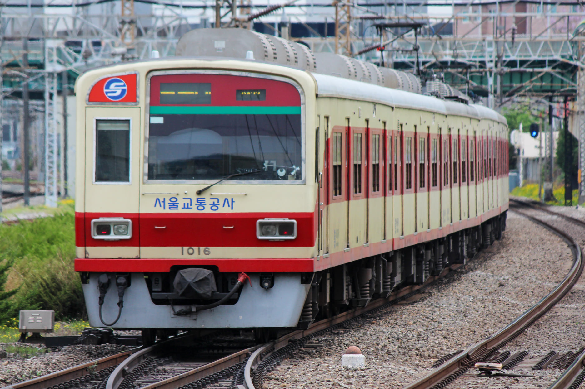

서울교통공사 1000호대 전동차
VVVF 1차분
| 제어 방식 | VVVF |
| 구둥 방식 | 전기 동력분산식 |
| 편성 | 10량 1편성 |
| 도입 시기 | 1998~1999년 |
| 제작사 | 현대정공 |
| 소유자 | 서울교통공사 |
| 소속 기지 | 군자차량사업소 |
| 차호 | 101~106편성 |

102편성사진: 강유찬 
103편성사진: 강유찬 |
|
1998~99년 현대정공 제작. 기존 히타치산 저항제어 차량을 대체하기 위해 도입되었으며, 서울지하철공사 차량 중 최초로 LED 행선안내기를 채택하였다. 4호선 차량과는 외관은 같지만, 일부 사양은 다른 편이다. 추진제어장치는 미쓰비시제 VVVF - GTO
103편성은 군자기지에서 탈선 사고가 났었다. 105, 106편성의 3, 6호차에는 저항 부수객차가 있다. 모든 1차분 차량에는 자전거 거치대가 있는데 106편성에만 자전거 거치대가 없다.
VVVF 2차분
| 제어 방식 | VVVF |
| 구둥 방식 | 전기 동력분산식 |
| 편성 | 10량 1편성 |
| 도입 시기 | 2002년 |
| 제작사 | 로템 |
| 소유자 | 서울교통공사 |
| 소속 기지 | 군자차량사업소 |
| 차호 | 107~110편성 |

108편성사진: 강유찬 
110편성사진: 강유찬 |
|
2002년 로템 제작. 1977~78년산 저항제어 차량을 대체하기 위해 도입하였다. 1차분과의 차이점은 출입문 창틀의 크기. 추진제어장치는 미쓰비시제 VVVF - GTO.
107편성은 치매예방 열차로 운행한 적이 있었다. 109, 110편성의 3, 6호차에는 저항 부수객차가 있다.
개조 저항
| 제어 방식 | 저항 |
| 구둥 방식 | 전기 동력분산식 |
| 편성 | 10량 1편성 |
| 도입 시기 | 1999, 2004년 |
| 제작사 | 대우중공업 |
| 소유자 | 서울교통공사 |
| 소속 기지 | 군자차량사업소 |
| 차호 | 111~116편성 |

112편성사진: 강유찬 
114편성사진: 강유찬

116편성사진: 송치민 |
|
1989년 대우중공업 제작. 1974~78년산 저항제어 차량의 신조 객차이며, 이 차량이 퇴역한 후에 남은 차량을 재조합하여 선두화 후 운행중인 차량이다. 2014년에 폐차가 예정되어 있었으나, 모든 편성이 대수선을 하여 2028년까지 운행할 예정이다.
111편성은 구 107편성의 사고로 인해 남은 전동차들을 짬뽕해서 만든 차다. 112편성은 군자기지에서 충돌 및 탈선 사고가 일어었났다.